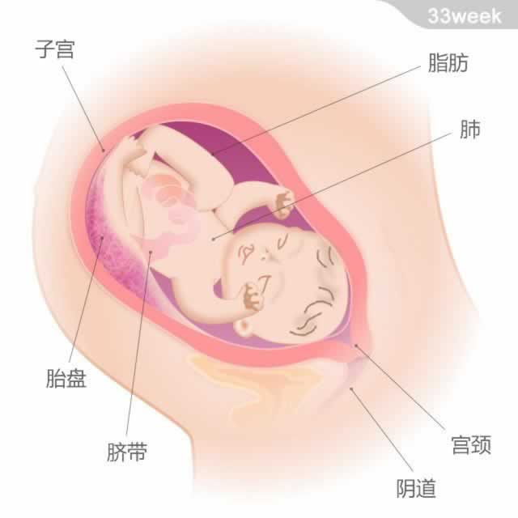

宝宝的重量约为2.275千克，从头部到臀部的长度约为31厘米。
现在，宝宝的肺部基本发育成熟，可以为他在子宫外的存活提供保障。宝宝的免疫系统还在继续发育，在出生后会帮助他抵御轻微的感染。
此时，羊水中的宝宝动作幅度大而缓慢，他可能已经摆出头朝下的位置，为出生做好了准备。但还有大约3%的宝宝会将臀部或腿部朝向子宫颈，呈现胎位不正。医生可能会使用胎位倒转术（用手在腹壁上摸到宝宝的头后，把头慢慢转到骨盆腔里，再把臀部推上去的专业治疗）来使宝宝恢复到正确的位置。
- 看看大家是如何讨论
 免疫系统
免疫系统- 更多链接
- 查看妈妈交流圈
- 查看孕9月所有精彩话题
- 上一篇：感觉疲惫，可能出现皮…
- 下一篇：晚间安睡小窍门